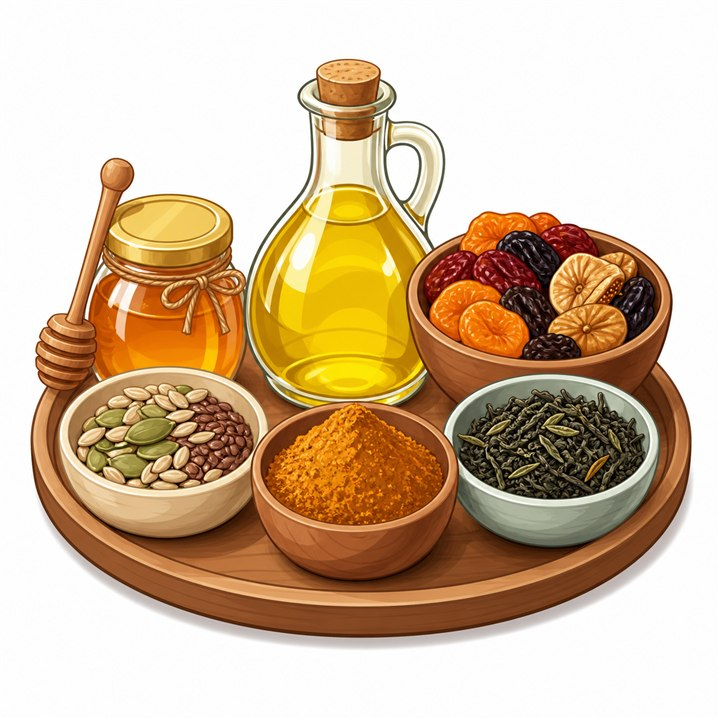

Girosto Special
ঢেকিছাঁটা চিড়া (কাটারিভোগ) | Chira price in Bangladesh
SKU: GIR-117
সকালের নাশতায় দই-চিড়া, বিকেলে চিড়ার পায়েস বা মোয়া। চিড়া আমাদের খাবারের টেবিলে বহু পুরোনো এক নাম। কিন্তু চিড়া কেনার সময় ঘ্রাণ, নরমভাব আর মান নিয়ে নিশ্চিত হওয়া সবসময় সহজ নয়। গিরস্তের ঢেকিছাঁটা চিড়া (কাটারিভোগ) সেই ভাবনা থেকেই বাছাই করা। সুগন্ধি কাটারিভোগ ধানের স্বাভাবিক ঘ্রাণ আর ঐতিহ্যবাহী ঢেকিছাঁটা পদ্ধতির স্বাদ, দুটোই এক প্যাকেটে।
কাটারিভোগ ধানের ছোট দানা আর মিষ্টি সুবাস এই চিড়াকে আলাদা পরিচিতি দিয়েছে। ঢেকিতে কোটার ফলে চিড়ার দানা বেশ নরম হয়, ভেজালেই সহজে ফুলে ওঠে। তাই দই, দুধ, গুড় কিংবা মধুর সঙ্গে খেলে স্বাদ জমে যায়।
৳150
Product availability, appearance, and delivery time may vary. Contact Girosto if you need sourcing or ingredient details.
গিরস্তের ঢেকিছাঁটা কাটারিভোগ চিড়া কেন বেছে নেবেন?
চিড়ার স্বাদ নির্ভর করে ধানের জাত, তৈরির পদ্ধতি আর সংরক্ষণের ওপর। গিরস্তের চিড়ায় এই তিন বিষয়েই নজর রাখা হয়েছে, যাতে প্রতিবার খাওয়ার অভিজ্ঞতা একই রকম ভালো থাকে।
- কাটারিভোগ ধানের ঘ্রাণ: সুগন্ধি ধান থেকে তৈরি, তাই ভেজালে বা মেখে নিলে মিষ্টি সুবাস পাওয়া যায়।
- ঢেকিছাঁটা ঐতিহ্য: প্রাচীন পদ্ধতিতে কোটা চিড়ার দানা নরম ও স্বাদে আলাদা।
- সহজে ভিজে নরম হয়: অল্প সময়েই ফুলে ওঠে, ফলে নাশতা বানাতে ঝামেলা কম।
- কৃত্রিম ফ্লেভার নেই: ঘ্রাণ বাড়ানোর জন্য আলাদা কিছু যোগ করা হয় না।
- বহুমুখী ব্যবহার: মিষ্টি, নোনতা, ঠান্ডা বা গরম, সব ধরনের রেসিপিতেই মানিয়ে যায়।
- পরিবারের সবার জন্য: সকালের নাশতা থেকে অতিথি আপ্যায়ন, সব জায়গায় চলে।
কাটারিভোগ চিড়া কী?
চিড়া তৈরি হয় ধান থেকে। ধান ভিজিয়ে বা ভেজে নিয়ে চেপ্টা করে কুটে নিলেই পাওয়া যায় চ্যাপ্টা, হালকা দানার চিড়া। কাটারিভোগ বাংলাদেশের একটি জনপ্রিয় সুগন্ধি ধানের জাত। এর দানা ছোট এবং ঘ্রাণ মিষ্টি। এই ধান থেকে তৈরি চিড়াও তাই আলাদা সুবাস পায়, যা সাধারণ চিড়ার সঙ্গে খেলেই বোঝা যায়।
ঢেকিছাঁটা বলতে কী বোঝায়?
ঢেকি আমাদের গ্রামবাংলার একটি পুরোনো কাঠের যন্ত্র। পা দিয়ে চাপ দিয়ে ওপরে-নিচে ওঠানামা করিয়ে এতে ধান বা চাল কোটা হয়। এই পদ্ধতিতে কোটা চিড়াকেই ঢেকিছাঁটা চিড়া বলা হয়। অনেকেই মনে করেন, এভাবে তৈরি চিড়া নরম হয় এবং স্বাদে ঘরোয়া ভাব থাকে।
ঢেকিছাঁটা ও সাধারণ চিড়ার পার্থক্য
দুই ধরনের চিড়াই ধান থেকে তৈরি হয়। তবে তৈরির ধরন, দানার গঠন আর খাওয়ার অনুভূতিতে কিছু পার্থক্য দেখা যায়। সহজে বুঝতে নিচের টেবিলটি দেখুন।
বিষয় | ঢেকিছাঁটা চিড়া | সাধারণ মেশিনে তৈরি চিড়া |
তৈরির পদ্ধতি | ঐতিহ্যবাহী ঢেকিতে কোটা | যান্ত্রিকভাবে চাপ দিয়ে তৈরি |
দানার ধরন | সাধারণত নরম ও হালকা | তুলনামূলক শক্ত বা পাতলা হতে পারে |
ভেজানোর পর | দ্রুত ফুলে নরম হয় | জাত ও প্রস্তুতির ওপর নির্ভর করে |
ঘ্রাণ | ধানের স্বাভাবিক সুবাস বেশি টের পাওয়া যায় | জাতভেদে ভিন্ন |
খাওয়ার অনুভূতি | ঘরোয়া ও নরম | জাতভেদে ভিন্ন |
চিড়া খাওয়ার উপকারিতা
চিড়া আমাদের দৈনন্দিন খাবারের একটি হালকা ও সহজলভ্য উপাদান। সাধারণভাবে চিড়া নিয়ে যেসব বিষয় আলোচিত হয়, তার একটি সংক্ষিপ্ত ধারণা নিচে দেওয়া হলো।
১. দ্রুত শক্তির উৎস
চিড়া মূলত কার্বোহাইড্রেটের একটি উৎস। সকালের নাশতায় বা কাজের ফাঁকে হালকা খাবার হিসেবে এটি দ্রুত শক্তি জোগাতে সাহায্য করে।
২. হালকা ও সহজে হজমযোগ্য
চিড়া ভিজিয়ে নরম করে খাওয়া হয়, তাই এটি সাধারণত হালকা খাবার হিসেবে পরিচিত। ভারী খাবারের বিকল্প খুঁজলে চিড়া ভালো একটি পছন্দ হতে পারে।
৩. রান্নার ঝামেলা কম
চুলায় বসানোর দরকার নেই। দই, দুধ বা গুড় মিশিয়ে কয়েক মিনিটেই নাশতা তৈরি হয়ে যায়। ব্যস্ত সকালের জন্য এটি বেশ সুবিধাজনক।
৪. নানা রেসিপিতে মানানসই
মিষ্টি থেকে নোনতা, ঠান্ডা থেকে গরম, চিড়া প্রায় সব ধরনের রেসিপিতে ব্যবহার করা যায়। তাই একই প্যাকেট থেকে বিভিন্ন দিনে ভিন্ন স্বাদের খাবার বানানো সম্ভব।
কাটারিভোগ চিড়া কীভাবে খাবেন?
চিড়া খাওয়ার ঘরোয়া কয়েকটি জনপ্রিয় উপায় নিচে দেওয়া হলো।
১. দই-চিড়া
প্রয়োজনমতো চিড়া একটি বাটিতে নিয়ে পানিতে ২–৩ মিনিট ভিজিয়ে নিন। পানি ঝরিয়ে এর ওপর টকদই, গুড় বা খাঁটি মধু দিয়ে মিশিয়ে নিন। চাইলে কলা বা মৌসুমি ফল যোগ করতে পারেন।
২. দুধ-চিড়া
ঠান্ডা বা হালকা গরম দুধে চিড়া ভিজিয়ে চিনি বা খেজুরের গুড় দিয়ে খেতে পারেন। শিশুদের নাশতার জন্য এটি সহজ একটি বিকল্প।
৩. চিড়ার পায়েস
ফুটন্ত দুধে চিড়া দিয়ে অল্প আঁচে ফুটিয়ে নিন। চিনি বা গুড়, এলাচ ও কিশমিশ দিলে সুগন্ধি পায়েস তৈরি হয়ে যাবে।
৪. নোনতা চিড়া ভর্তা
ভেজানো চিড়ায় কাঁচা মরিচ, পেঁয়াজ কুচি, সরষের তেল আর লবণ মিশিয়ে মেখে নিন। সঙ্গে ডিম বা আলুভর্তা থাকলে পূর্ণাঙ্গ নাশতা হয়।
৫. চিড়া ভাজা
শুকনো চিড়া অল্প তেলে মচমচে করে ভেজে নিন। এতে বাদাম, কিশমিশ ও সামান্য লবণ মিশিয়ে বিকেলের নাশতা বানানো যায়।
কাটারিভোগ চিড়া সংরক্ষণের নিয়ম
সঠিকভাবে রাখলে চিড়ার ঘ্রাণ ও মচমচে ভাব বেশি দিন ভালো থাকে।
- প্যাকেট খোলার পর বায়ুরোধী পাত্রে রাখুন।
- আর্দ্রতা ও পানির সংস্পর্শ এড়িয়ে চলুন।
- সরাসরি সূর্যের আলো ও তীব্র গন্ধযুক্ত জিনিস থেকে দূরে রাখুন।
- ঠান্ডা ও শুষ্ক স্থানে সংরক্ষণ করুন।
- ভেজা চামচ বা হাত দিয়ে সরাসরি তুলবেন না।
- প্যাকেটে উল্লেখিত মেয়াদের মধ্যে ব্যবহার করুন।
ঢেকিছাঁটা চিড়া (কাটারিভোগ) Specification
বিষয় | বিস্তারিত |
পণ্যের নাম | ঢেকিছাঁটা চিড়া (কাটারিভোগ) |
Product Type | সুগন্ধি চিড়া |
ধান | কাটারিভোগ |
প্রস্তুত পদ্ধতি | ঐতিহ্যবাহী ঢেকিছাঁটা |
Artificial Flavour | ব্যবহার করা হয় না |
ভিজিয়ে রাখার সময় | আনুমানিক ২–৩ মিনিট |
ব্যবহার | দই-চিড়া, পায়েস, ভর্তা, ভাজা |
Storage | বায়ুরোধী পাত্রে, ঠান্ডা ও শুষ্ক স্থানে |
Pack Size | ৫০০ গ্রাম |
বিক্রেতা | Girosto – গিরস্ত |
আরও দেখুন: গিরস্তের অর্গানিক চাল ও পুরো কালেকশন।